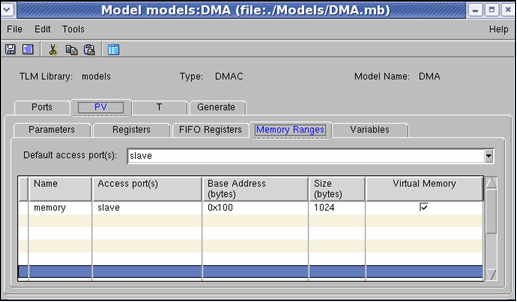

Memory Ranges
Memory ranges are set to define memory blocks.
Specifying Memory Ranges
To specify memory ranges for the model:
- In Vista's modeling dialog, select the PV tab.
- In the Memory Ranges tab, use the table to define a memory block. Those blocks are internal memory arrays used to define a Memory Model or internal buffers used for data processing. It is recommended to specify the entire available range.
- Name— Name identifying the memory range.
- Access port— modify the access port if a value other than the Default Access Port value is needed
- Base Address— Start of the memory block.
- Size— Size of the memory block.
- Virtual Memory— Mark the checkbox if this range is a virtual memory. If marked, the declared memory range is not allocated any physical memory, but is implemented by callback functions that are created in the PV template. (“cb_write_<memory name>()” and “cb_read_<memory name>()” functions).
Figure 7‑17.
Vista Modeling - Memory Range Tab

Table 7‑6.
Vista Modeling - Memory Range Tab Options
|
Field/Control
|
Description
|
Values
|
|
Name
|
The name assigned to each memory range.
|
Legal Identifier
(See Format for Legal Identifiers)
|
|
Access Port
|
The port via which memory is accessed.
|
|
|
Base Address
|
The start of the memory block.
|
Hex address (for example 0x104)
|
|
Size
|
The size of the memory block
|
Unsigned integer
|
|
Virtual Memory
|
Whether this memory range is virtual
|
Yes/No
|